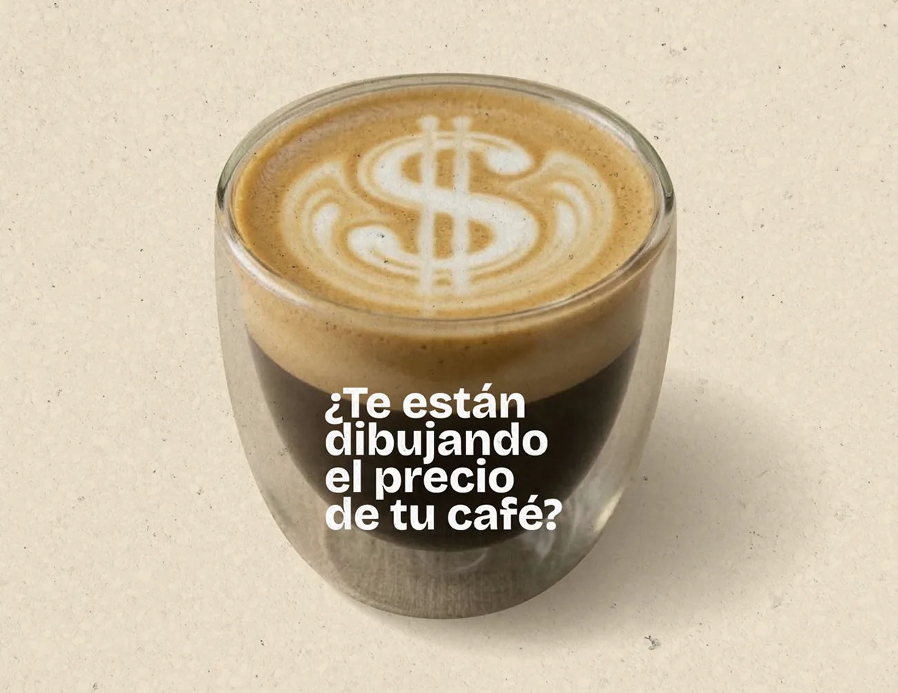

Inversión realizadaAbril–septiembre
$8,93 M
Meta $4.998.700Google $3.930.788
Abril — septiembre 2026
La inversión en pauta, los negocios que se contactaron y los resultados comerciales documentados desde el inicio de la cuenta.
Explorar el período01Inversión publicitaria
Cuánto se invirtió hasta septiembre y qué inversión queda programada para el cierre de 2026.
Inversión registrada en las plataformas.
Distribución por canal
| Mes | Google Ads | Meta Ads | Total |
|---|---|---|---|
| Abril | $240.187 | $181.730 | $421.917 |
| Mayo | $735.785 | $523.209 | $1.258.993 |
| Junio | $723.848 | $514.250 | $1.238.098 |
| Julio | $914.173 | $1.039.404 | $1.953.577 |
| Agosto | $782.737 | $1.644.480 | $2.427.217 |
| Septiembre | $534.057 | $1.095.628 | $1.629.686 |
| Acumulado | $3.930.788 | $4.998.700 | $8.929.488 |
| Mes | Google Ads | Meta Ads | Total |
|---|---|---|---|
| Octubre | $920.531 | $1.394.097 | $2.314.628 |
| Noviembre | $579.710 | $1.017.035 | $1.596.745 |
| Diciembre | $579.710 | $1.017.035 | $1.596.745 |
| Programado | $2.079.951 | $3.428.167 | $5.508.118 |
Importes redondeados a pesos. Los totales se calculan sobre los valores originales; puede haber diferencias mínimas de redondeo.
El saldo de septiembre de $938.664 ya está incorporado en la programación de octubre. La inversión pendiente corresponde al plan compartido para octubre–diciembre.
La captura distingue un presupuesto global de $20.000.000 y $17.391.304 de “inversión al medio”. La ejecución en plataformas y la programación pendiente se presentan por separado. Para definir el saldo definitivo contra el presupuesto global, resta conciliar los gastos y ajustes que contempla esa planificación.
02Captación y oportunidades
Consultas de nuevas aperturas, comercios en actividad y negocios que buscan sumar café a su propuesta.
Base comercial · todos los orígenes.
Una base para trabajar
392registrosCasi 400 registros de contacto utilizables para analizar necesidades, propuestas y oportunidades de seguimiento.
Café, equipamiento y asesoramiento para comenzar.
Abastecimiento, prueba de café y renovación de equipos.
Incorporar o mejorar la propuesta de café del negocio.
Consultas por café y alternativas de equipamiento.
Los comentarios amplían el panorama con panaderías, pastelerías, establecimientos turísticos, estaciones de servicio y espacios deportivos. Las categorías mostradas no abarcan toda la base ni acreditan por sí solas la calidad comercial.
Resultados comerciales documentados
La planilla permite identificar operaciones concretas y casos de recompra.
Una consulta por café, envío de muestra y compras posteriores registradas de forma recurrente.
Córdoba · abastecimientoNegocio gastronómico de Alta Gracia con consulta y recompra documentadas.
Alta Gracia · caféMáquina, molino
y compras posteriores.
Compra de equipamiento y tres compras de café registradas en la planilla.
Villa Carlos Paz · equipamientoMáquina, molino
y café.
Consulta en agosto y registro posterior de compra de equipamiento junto con café.
Córdoba · equipamientoDatos del registro comercial aportado, con trazabilidad parcial del origen publicitario. Se excluyen ventas de octubre, movimientos sin fecha y operaciones identificadas como vendedor. Las operaciones de equipamiento se cuentan por separado.
03Rendimiento publicitario
Dos plataformas que acercaron usuarios a propuestas de café, abastecimiento y equipamiento para negocios.
Mensajes de precio por kilo, abastecimiento y soluciones de equipamiento para negocios gastronómicos y nuevas aperturas.
de las conversiones se concentró
en estas tres campañas.
Inversión total ÷ 248 resultados.
Incluye las campañas de visibilidad.
173 resultados de Meta + 75 de Google. La atribución de ambas plataformas puede superponerse; no equivale a 248 contactos únicos ni a ventas confirmadas.
04Presencia de marca
El spot y las campañas de tráfico acompañaron la captación con exposición de marca y visitas al perfil de Instagram.

El spot en números
306.030Reproducciones registradas en la campaña del spot publicitario.
Los conteos pueden incluir repeticiones. Los clics se superponen con otras métricas de Meta y no se suman como interacciones únicas.
05Seguimiento comercial
Hay notas de contacto, propuestas, muestras y conversaciones retomadas. Falta completar el estado comercial de una parte de la base.
Información por completar
139 registrosSin una clasificación definida, todavía no podemos evaluar su resultado comercial con precisión.
“No contesta” describe una instancia del seguimiento. Por sí sola, no determina la calidad del contacto ni su resultado final.
Definir interés, compra, descarte o seguimiento pendiente.
Relacionar las consultas con operaciones y compras posteriores.
Identificar la procedencia y la próxima acción comercial.
Contactos ingresados hasta el 30 de septiembre, con su último estado disponible en la planilla compartida. Algunas notas fueron actualizadas en octubre. La ausencia de estado no implica ausencia de contacto o de gestión.
Lo que deja el período
La base reúne necesidades concretas de café y equipamiento, con casos de compra y recompra documentados. Un registro comercial más completo permitirá reconocer qué oportunidades generan mayor valor para el negocio.
Extractos de Meta Ads y Google Ads, del 1 de abril al 30 de septiembre de 2026, contrastados con el dashboard de Mastermetrics. Los resultados atribuidos pueden superponerse entre plataformas.
Pestaña Landing de la planilla comercial. 411 registros fechados en abril–septiembre, menos 17 pruebas y 2 filas sin datos de contacto. Quedan 392 registros utilizables, antes de consolidar reiteraciones.
Movimientos con fecha de abril–septiembre en el registro de ventas aportado. Se excluyen operaciones sin fecha, ventas de octubre y operaciones identificadas como vendedor. La atribución de ventas a campañas es parcial.
Inversión realizada según plataformas. Programación de octubre–diciembre según la captura compartida, con el saldo de septiembre incluido en octubre. La conciliación definitiva con el presupuesto global queda pendiente.